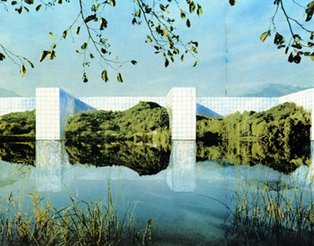

A simple interaction can go a long way. The first time I experimented with HTML was in 2001 on neopets.com. On neopets.com, users had the option of customizing their profiles with custom HTML. One of the first things I remember was wanting colorful links, funky cursors and a matching scroll bar. Second only to the elusive faerie paint brush.
Since then, my interests have changed. I still enjoy
exploring experimenting with programming and design
(and writing, too, though I’d like to think I’ve become
more eloquent than then). One of my favorite design exercises
is to add restrictions to a project. On this page, I use one
interaction: hovering, in many different ways. Most of the
time you hover over a link, but you can add a hover
effect to anything you want.

Take a look at some fancy CSS selectors.
One of my
favs is the even or odd pseudo selector.
You can get pretty creative with that.
Check out those palms!
SVGs and CSS shapes are fun to play with, too. You can animate them and bring them to life with just a few lines of code. They’re used frequently as icons, but you can use them however you want. Here I’m using a CSS shape and changing it a few ways.
Images have a lot of CSS options, too. Though not way as sophisticated as photoshop, images have an array of filters you can use. This can be used as an easy way to systemize an archive of found images. 
Animations can be used for
Lots
of
fun
stuff!